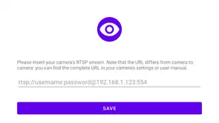
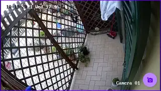

Ojo RTSP IP Camera viewer
أمان وخصوصية
Ojo is a basic IP Camera surveillance wall. IP camera's RTSP streams are added via its url and shown in the classic tile configuration. The number of tiles is automatically chosen based on the number of configured cameras: a single camera goes full screen, adding more cameras the app switches to a g
✓ ترخيص مفتوح (GPL-3.0-only) · آخر تحديث: 2024-04-24
0.1.4الإصدار
52.3 MBالحجم
GPL-3.0-onlyالرخصة
Open in Kanzتحميل APK (52.3 MB)
Download APK
SHA-256: ec4c2c62059a78e2bfcd8e6fe565c02b6f277d1b6c256af6ecb03a4549b3ec0a


تطبيقات تانية لنفس المطوّر (3)
More apps from this developer: it.danieleverducci
امسح الكود لفتح صفحة التطبيق
Scan to open this app page
لو كنز مش متثبت عندك: نزّل متجر كنز.
Not installed? Get the Kanz store.